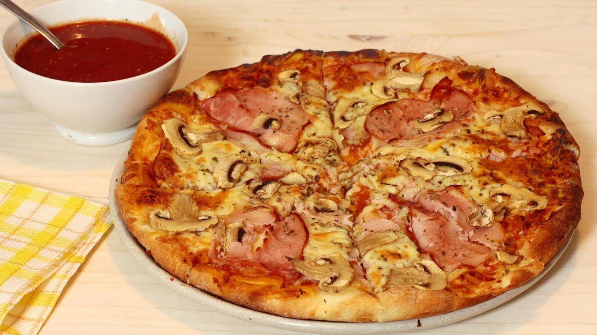

Pizza

Kada pravim testo za pizzu, spremam na ovaj način. Testo je mekano i sutradan, a dovoljno poslušno da ga možete rastanjiti onoliko koliko treba. Od ove mere dobijem 2 velike i jednu malu pizzu koju obično Viktorija kapariše 🙂 Namirnice nekad rendam a nekad sitnije iseckam (šampinjoni, šunka, kačkavalj). Masline stavim zbog muža, a jaje zbog mene (ovog puta nisam). Slanina nam daje poseban šmek pa i nju volim da stavim.
Što se tiče ovih rupičastih plehova, topla preporuka za njih.
Sastojci
- 250 ml mleka
- 50 ml ulja
- so
- secer
- polovina kvasca
- 400 - 420 g brasna
Koraci
- U mlako mleko dodajte izmrvljen kvasac, šećer i kašičicu brašna
- Ostavite da kvasac nadođe.
- U odgovarajući sud sipajte ulje i so.
- Dodajte mleko sa nadošlim kvascem i brašnom zamesite testo.
- Dok testo nadolazi pripremite sve one namirnice koje obično stavljate na pizzu.
- Nadošlo testo premesite, razvucite i stavite u plehove.
- Premažite paradajz sosom, stavite pripremljene namirnice i pecite 10-12 minuta na 230 °C.
- Pospite origanom i poslužite.